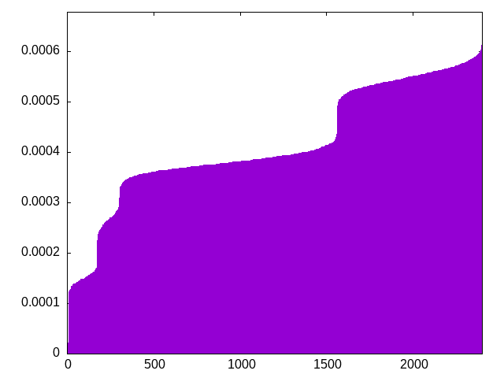
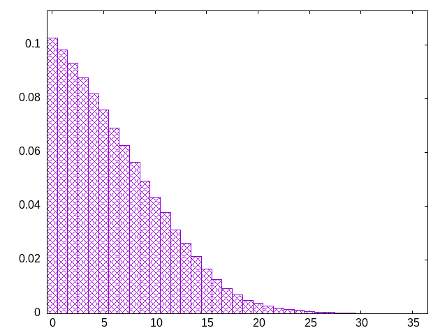

choose pieces from a bag, refilling when empty
21-piece bag (three of each piece)
ziojltillsttjjsoszoizjoslitzzsioszltjojlitzjjitzjtilslsoztlsoiojsszjijtzlooiotllzitsstzzzoislstltoijjoiljtlijtjszjlitlzizossoolzsltlzotzjjtojoissiisojotsolizisztjltzjlitssioolitzotzijjsjlzlzootttjizzoillljsijssiilljjotilooszzzstjsttjtzolzlislzssitjoojizjsolltztisoojjziilstioozijtjslzsjotszllitjztzosziljsjiottoslilstijilszolijjzzlosttoozjittjjolltoislsizsztzzojtslostszijilioljiljoozjllitstsjziztsoozttlszizljlsjjtosioitzjiittjoiszlsosozljloojltllzsistizojijtsziioljlttsjoslsziojztzzliossototjljztjiizlslitolstljtiosojzjzizslltosjzjizosioztisjtlltljzoizilososjjszittsoilztjszoztjltoiisjliztoosliltztzssjjliojtjoozsiszzjlisijtlltoojotzsjziolsittillzjssjsiojztjilllziottozstlojisjtsjsioliozztzlottslstljzizjolsojizijjlztslooojilsiztistzliljislotojtjzsitzszolsijzottzzlljiijstosottllzjztiosiloosjjzistljissilztsooztjoiljzoijtotjltsllzzjoisizsljslotlsizjtiojtozzsiiltszzjzjottljsoiiloszijtjtztjoissolslzloijtjioiitsltszoljzozsliozsoltijzsilojtlztsjtllojtizjzosozijistsltojlzojztjssisoiilztlisijlslojzltt
bagginess: 0.0168
bagginess6: 0.2599
distribution1_maxgap: 1.000000000001e-06
distribution2_maxgap: 0.006187006187006187
distribution3_maxgap: 0.001232002464004928
distribution4_maxgap: 8.800026400079201e-05
diversity: 5.0
entropy: 11.504
evenness_diff: 5.877
evenness_same: 4.711
maxdrought: 33.6
maxflood: 6
peakdrought: 0.0
repchance: 0.1024
seq4_coverage: 1.0000
seq4_follow: 6.603
distribution4_graph:

drought_graph:

similarity: (lower is more similar)
| 0.002 | deepbag_window10 |
| 0.003 | shift10_5 |
| 0.005 | bag4 |
| 0.007 | balanced9 |
| 0.007 | deepbag_window7 |
| 0.011 | shift14 |
| 0.022 | shift21 |
| 0.024 | balanced_long_mul_pure |
| 0.025 | seamless_bag3_pure |
| 0.034 | balanced_long_add_pure |
| 0.045 | deepbag_fixed10 |
| 0.052 | wet3 |
| 0.052 | seamless_bag2_pure |
| 0.066 | shift7 |
| 0.074 | nes_pure |
| 0.078 | bag2 |
| 0.123 | nes |
| 0.162 | fullrandom_pure |
| 0.173 | wet2_size100 |
| 0.175 | fullrandom |
| 0.219 | shirts2 |
| 0.219 | weight_lin_pure |
| 0.233 | weight2 |
| 0.259 | wet2 |
| 0.276 | balanced5 |
| 0.284 | deepbag_window4 |
| 0.302 | balanced7 |
| 0.307 | deepbag_fixed7 |
| 0.370 | weight |
| 0.406 | shirts_smooth2 |
| 0.415 | seamless_deep_pure |
| 0.431 | wet3_size12 |
| 0.534 | tgm |
| 0.545 | tgm_pure |
| 0.615 | bag |
| 0.617 | bag_pure |
| 0.649 | shift3_5 |
| 0.688 | deepbag_fixed4 |
| 0.771 | tgm_tap |
| 0.773 | tgm_tap_pure |
| 0.864 | weight_exp |
| 0.866 | ti |
| 0.873 | wet_pure |
| 0.958 | weight_exp_pure |
| 1.037 | wet |
| 1.156 | seamless_bag_pure |
| 1.630 | shirts |
| 1.818 | shirts_smooth |
| 2.017 | repeat_recent_pure |
| 2.906 | shift1_75 |
| 4.151 | repeat_last_pure |
| 9.057 | flatbag |
| 9.057 | flatbag_pure |